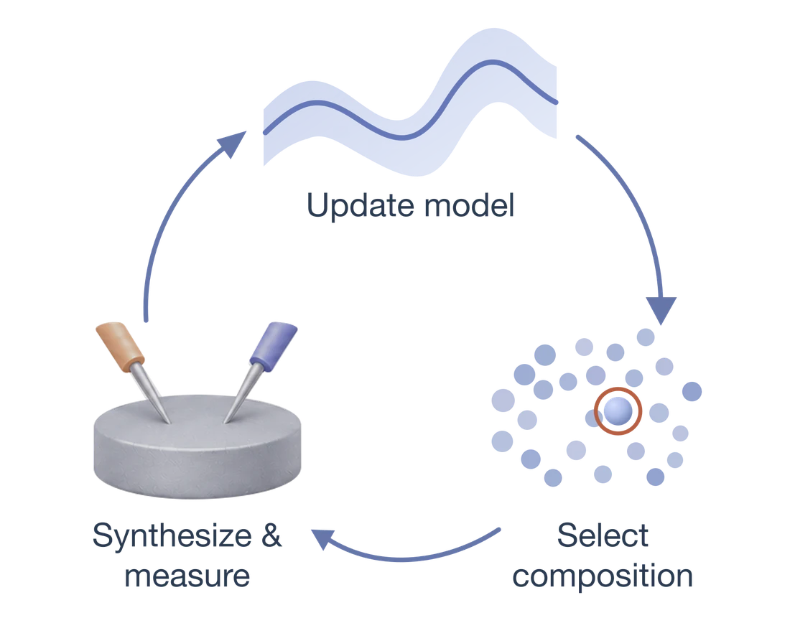
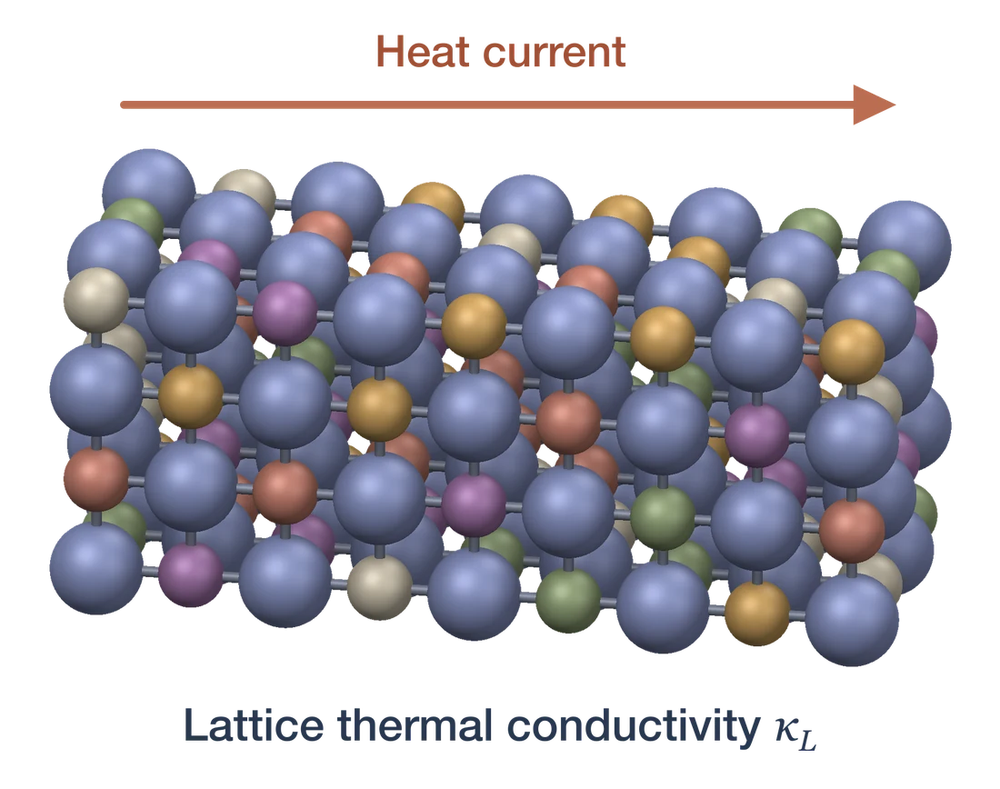

Active learning-guided accelerated discovery of ultra-efficient high-entropy thermoelectrics
Oral presentation at the 2026 MRS Spring Meeting, Honolulu.
Ph.D. candidate in the Department of Chemical and Biological Engineering, Seoul National University. Advised by Prof. Won Bo Lee. Graduating February 2027, then continuing in the same group as a postdoctoral researcher.
I use first-principles calculations and machine learning to connect atomic structure to function in energy materials, from transport in high-entropy thermoelectrics to reactions on electrocatalyst surfaces.
My thesis centers on high-entropy chalcogenides, whose composition space is far too large to screen by experiment or density functional theory alone. I use active learning and machine learning force fields to find promising compositions and compute their transport properties, working closely with the experimental groups who make and measure them.
A nine-element chalcogenide has thousands of possible compositions, too many to make and measure one by one.

Working with experimental collaborators, I used Bayesian active learning to choose which compositions to synthesize next. The search reached three compositions with zT above 2 after 80 syntheses out of 16,206 candidates (Advanced Materials).

I am now training machine learning force fields to compute transport in these disordered structures at length scales density functional theory cannot reach.
I compute electrical conductivity from first principles by combining density functional theory with the Boltzmann transport equation. My current case study is a Cu/graphene system, and a manuscript is in preparation.
I also use density functional theory to explain experiments on electrochemical interfaces at the atomic scale: hydrogen evolution on N-CNT/Co@MoS2 and polymer-coated zinc anodes (both as co-first author), and nitrogen reduction on Pd/boron nitride nanotubes.
Methods Density functional theory (VASP), Boltzmann transport (BoltzTraP2), machine learning force fields (MTP, NEP/GPUMD), thermal transport from molecular dynamics (Green–Kubo, HNEMD), Bayesian active learning.
An asterisk marks equal contribution. Also listed on Google Scholar.
Oral presentation at the 2026 MRS Spring Meeting, Honolulu.
Teaching assistant, Department of Chemical and Biological Engineering, Seoul National University.